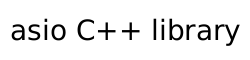

|  |
Inherited from posix::descriptor_base.
IO control command to set the blocking mode of the descriptor.
typedef implementation_defined non_blocking_io;
Implements the FIONBIO IO control command.
asio::posix::stream_descriptor descriptor(io_service); ... asio::descriptor_base::non_blocking_io command(true); descriptor.io_control(command);
Header: asio/posix/basic_stream_descriptor.hpp
Convenience header: asio.hpp